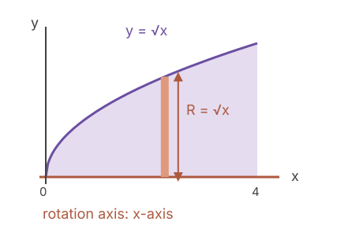
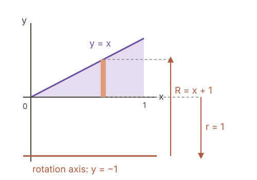
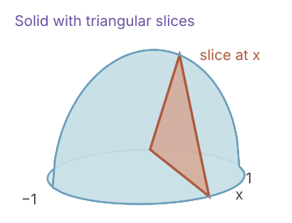
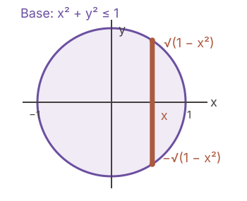
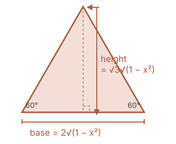
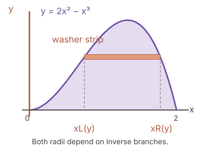
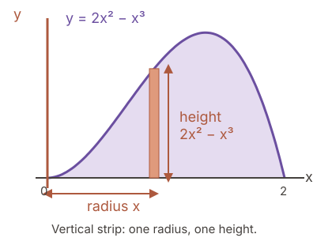
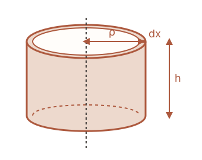
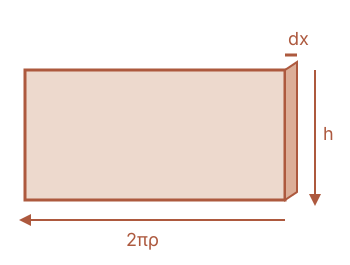
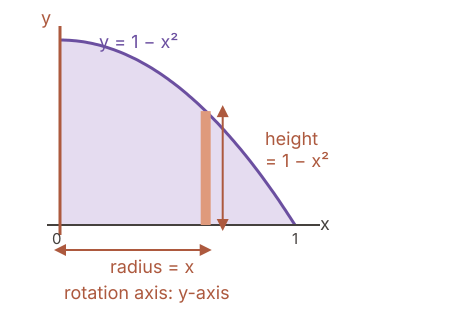

MA1508 Calculus · Chapter 6 · Lesson 2
Washers and cylindrical shells
One region, one axis, two ways to slice a solid of revolution.
Stewart, Single Variable Calculus: Concepts and Contexts, 4th ed.: §6.2, p. 438; §6.3, p. 449.
1. Watch a strip rotate
Rotate the region \(x^2\le y\le x\), \(0\le x\le1\), about the y-axis. Choose a strip, then press Play or move the rotation slider. The pale curves trace the same solid in both modes.
Original region · xy-plane
Swept strip · 3D view
A strip perpendicular to the axis sweeps a washer. \(R\) and \(r\) are distances from the axis; a disk has \(r=0\).
Rotate the region under \(y=\sqrt{x}\), above \(y=0\), for \(0\le x\le4\), about the x-axis.
Show answerHide answer

- Each cross-section is a disk with radius \(R(x)=\sqrt{x}\), and no hole.
- \(V=\pi\int_0^4x dx=\pi[x^2/2]_0^4=8\pi\).
Rotate the region between \(y=x\) and \(y=x^2\), for \(0\le x\le1\), about the x-axis.
Show answerHide answer

- The outer radius is \(x\), and inner radius is \(x^2\). Square each radius separately.
- \(V=\pi\int_0^1(x^2-x^4)dx=\pi(1/3-1/5)=2\pi/15\).
Rotate the region under \(y=x\), above \(y=0\), for \(0\le x\le1\), about \(y=-1\).
Show answerHide answer

- The axis is below the region. Outer radius is \(x+1\), inner radius is 1.
- \(V=\pi\int_0^1[(x+1)^2-1]dx=\pi\int_0^1(x^2+2x)dx=4\pi/3\).
A shifted axis changes both distances. Square the radii separately: \(R^2-r^2\), not \((R-r)^2\).
2. Cross-sections need not be circular
The base of a solid is the disk \(x^2+y^2\le1\). Cross-sections perpendicular to the \(x\)-axis are equilateral triangles. Find the volume.
Show answerHide answer



- At \(x\in[-1,1]\), the chord runs from \(-\sqrt{1-x^2}\) to \(\sqrt{1-x^2}\), so \(b=2\sqrt{1-x^2}\).
- An equilateral triangle has height \(\frac{\sqrt3}{2}b=\sqrt3\sqrt{1-x^2}\). Thus \(A(x)=\frac12 bh=\sqrt3(1-x^2)\).
- \(\displaystyle V=\int_{-1}^1\sqrt3(1-x^2)dx=\sqrt3[x-x^3/3]_{-1}^1=\frac{4\sqrt3}{3}.\)
3. Wrap a cylindrical shell
Rotate the region under \(y=2x^2-x^3\), \(0\le x\le2\), about the \(y\)-axis.


The washer radii \(x_L(y)\) and \(x_R(y)\) both solve \(y=2x^2-x^3\). A vertical strip avoids these inverses:
A strip parallel to the axis sweeps a shell. Unroll a thin shell: its length is the circumference \(2\pi\rho\), its height is \(h\), and its thickness is \(dx\) for a vertical strip.


Rotate the region between \(y=x\) and \(y=x^2\), for \(0\le x\le1\), about the y-axis.
Show answerHide answer

- A vertical strip has radius \(x\) and height \(x-x^2\).
- \(V=2\pi\int_0^1x(x-x^2)dx=2\pi(1/3-1/4)=\pi/6\).
Rotate the region under \(y=1-x^2\), above \(y=0\), for \(0\le x\le1\), about the y-axis.
Show answerHide answer

- The radius is \(x\), and height is \(1-x^2\).
- \(V=2\pi\int_0^1(x-x^3)dx=2\pi(1/2-1/4)=\pi/2\).
The selected strip's radius and height are lengths, so both are nonnegative. Next lesson checks the first shell result using washers.